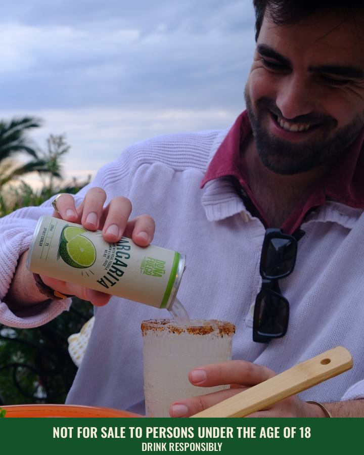
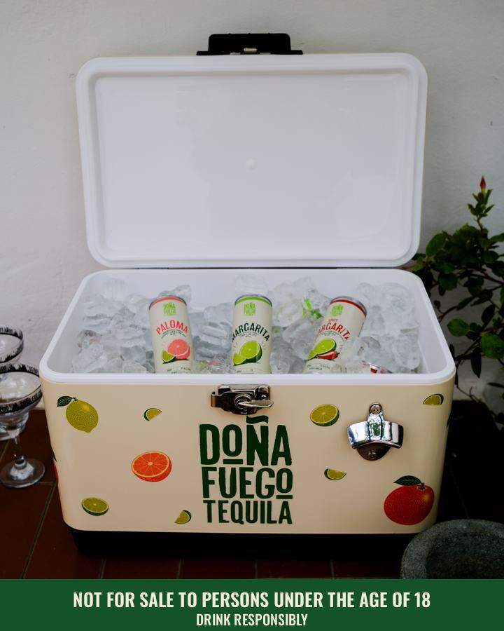
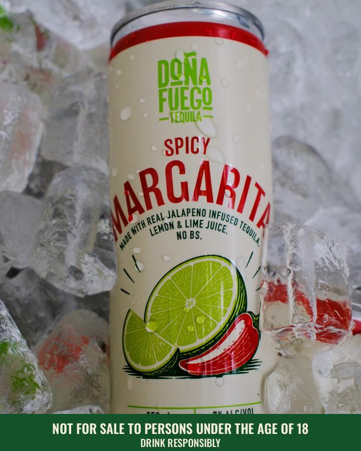
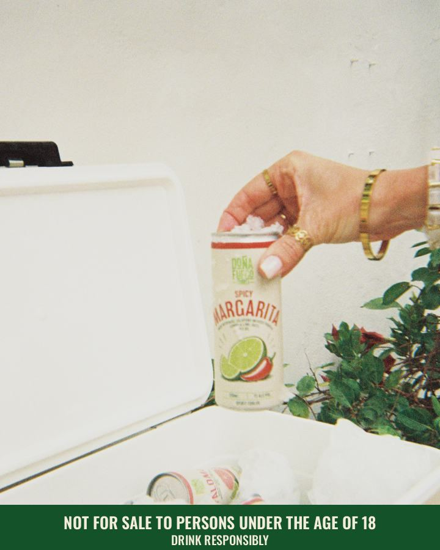
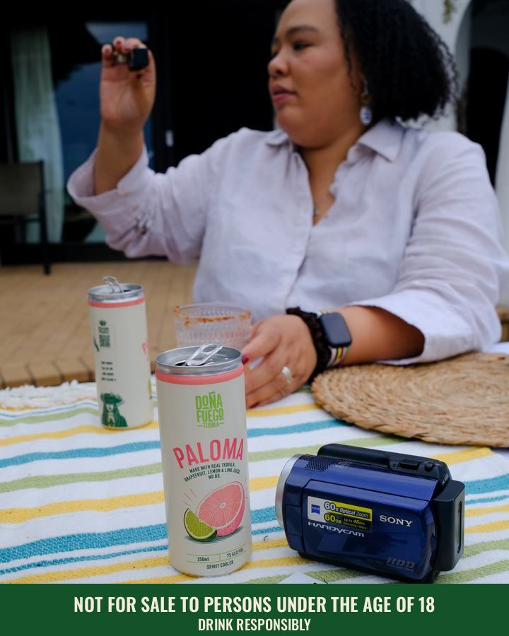
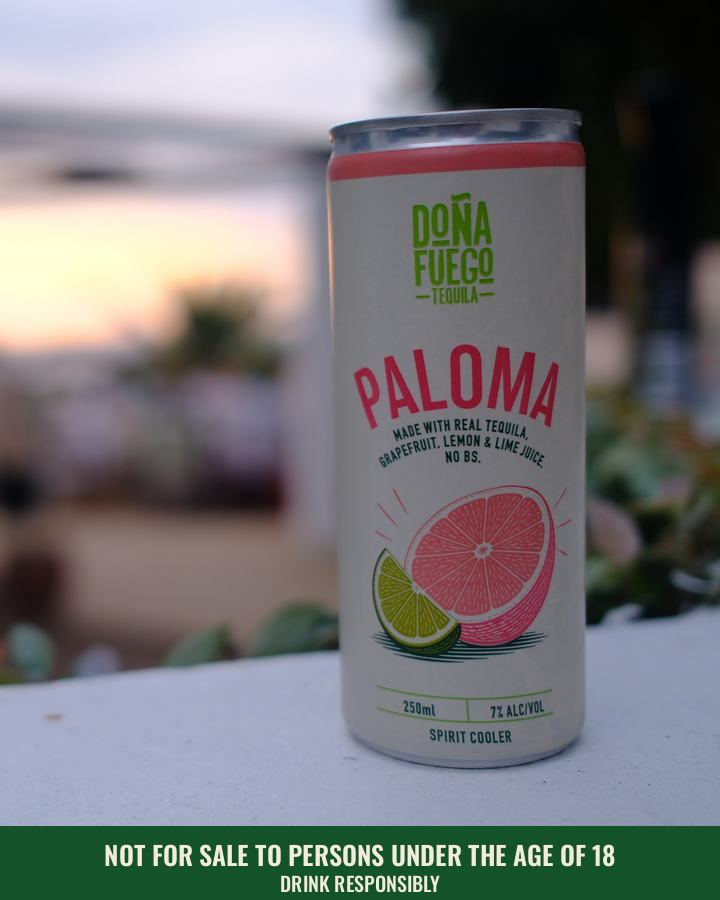
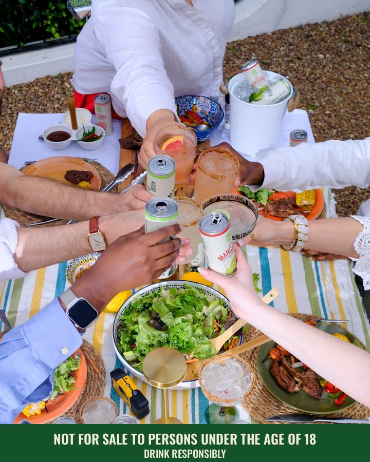

Doña Fuego · Instagram paid media · for sign-off · 15 October 2026
Cooler Box: go-live sign-off
Three paid Instagram campaigns on a fixed R15,000 a month, built to take @drink_fuego_tequila from 449 to 5,000 followers by 31 January 2027 and to send buyers straight to the Doña Fuego range on Checkers Sixty60.
Prepared by Johannes for Danielle. Everything below is built in the Dona Fuego ad account and paused. Nothing spends until this page is signed and the card is on the account. Sales, ROAS and ROI figures are projections from stated assumptions and the brand pro forma; the first two weeks of spend replace them with real numbers.
What you are signing off
R15,000a month, R500 a day. The pro forma's brand marketing line, not a rand more.
16Shop ads in four A/B test grids, word for word as they will run
4,551net new followers needed by 31 Jan, about 1,340 a month
+2extra 4-packs per store per week, the base rate-of-sale target (projection)
- The strategy and the budget split.
- The 16 Shop ads: images, copy, price and links.
- The Follow Reel concept, with the cuts to come back for a look before they go live.
- The KPIs and the rules for pausing ads.
- The rate-of-sale target of 1, 2 or 4 extra 4-packs per store per week, and the ROAS and ROI that follow.
Strategy
Followers are the scoreboard. Rate of sale at Checkers is the point. The plan spends in three lanes that feed each other: Reels find new people and earn the follow, Shop ads put the can and the price in front of people who live near a LiquorShop that delivers on Sixty60, and the Second round catches everyone who engaged and did not buy yet.
| Campaign | Job | Who sees it | Optimised for |
|---|
| 1 · Follow | Reels to new people, ending on the handle | Three interest sets: braai and beach occasions (18 to 40), tequila and cocktail drinkers (21 to 40), Checkers and online grocery shoppers (21 to 45) | ThruPlays, then follows |
| 2 · Shop on Sixty60 | One can, one price, one tap to Checkers | 18 to 45, within 16 km of 15 Sixty60 towns with a Checkers LiquorShop, from Cape Town and Stellenbosch to Durban, Johannesburg, Pretoria and Polokwane, interested in cocktails, tequila, braai, Checkers or online grocery. One ad set per SKU plus one for the full range. | Link clicks to checkers.co.za |
| 3 · Second round | Retarget the warm crowd with the Shop ads | Anyone who engaged with the Instagram account in the last 30 days, capped at 2 views a week | Link clicks |
- Timing. Shop ads run all day. If the readout shows clicks after delivery hours going to waste, budget is weighted to Thursday to Saturday daytime from week two.
- Price in every ad. R169 a 4-pack. Shoppers compare on the shelf, so they see the number before the shelf shows it.
- Landing page. The Margarita and Paloma ads open the full Doña Fuego range on checkers.co.za, the link Francois Botha at Rainmaker Media cleared for our channels on 27 August. The Spicy Margarita ads open its own product page. All links carry UTM tags so the referral reads as instagram / paid on Checkers' side.
- Checkers has signed off. Carina Britz and Francois Botha cleared the ads on 15 October 2026, as you agreed with them.
Budget
Follow 40%
Shop on Sixty60 45%
2nd 15%
| Campaign | Per day | Per month | Planned unit cost | Monthly volume |
|---|
| Follow | R200 | R6,000 | R5 per follow | 1,200 follows |
| Shop on Sixty60 | R225 | R6,750 | R4 per click | 1,688 clicks |
| Second round | R75 | R2,250 | R2 per click | 1,125 clicks |
| Total | R500 | R15,000 | | |
Unit costs are planning estimates. Second round launches once the engagers audience passes 1,000 people; until then its R75 a day stays unspent rather than moved. Trade marketing is a separate R25,000 a month in the pro forma and is untouched by this plan. The total never rises on follower numbers alone, only when Checkers rate of sale moves.
The 16 Shop ads
Four ad sets, four ads each. Every ad set is a two-by-two test: two photos, each run with two caption lines. Line 1 sells the drink and the 60-minute delivery; line 2 sells the occasion and the Checkers exclusive. After the test we know which photo works and which words work, not only which ad won. Seven photos are Liezl's from the Fresnaye braai and one is a disposable-camera frame from the same day. Everyone in frame is over 25.
Below, each ad set shows two of its four ads in full. The other two are the same photos with the captions swapped, listed in the grid underneath. Every image carries the under-18 line on a green band, and every caption ends with it.
Ad set 1 · Margarita
Lands on: Doña Fuego range on checkers.co.za
Photo A · the pour · line 1
DF
drink_fuego_tequila
Sponsored
···

Shop now›
drink_fuego_tequila Real tequila, real lime, 7%. Doña Fuego Margarita, R169 a 4-pack, delivered by Checkers Sixty60 in 60 minutes. Not for sale to persons under the age of 18. Drink responsibly.
Photo B · the cooler box · line 2
DF
drink_fuego_tequila
Sponsored
···

Shop now›
drink_fuego_tequila The drink you bring when everyone else brings wine. Doña Fuego Margarita, R169 a 4-pack, exclusive to Checkers LiquorShop and Sixty60. Not for sale to persons under the age of 18. Drink responsibly.
| Ad | Photo | Caption opens with |
|---|
| 1.A1 | the pour | Line 1 · “Real tequila, real lime, 7%.” |
| 1.A2 | the pour | Line 2 · “The drink you bring when everyone else brings wine.” |
| 1.B1 | the cooler box | Line 1 · “Real tequila, real lime, 7%.” |
| 1.B2 | the cooler box | Line 2 · “The drink you bring when everyone else brings wine.” |
Ad set 2 · Spicy Margarita
Lands on: Spicy Margarita 4 × 250 ml product page on checkers.co.za
Photo A · can in ice · line 1
DF
drink_fuego_tequila
Sponsored
···

Shop now›
drink_fuego_tequila Real jalapeño tequila, lemon and lime, 7%. Doña Fuego Spicy Margarita, R169 a 4-pack, delivered by Checkers Sixty60 in 60 minutes. Not for sale to persons under the age of 18. Drink responsibly.
Photo B · out of the cooler · line 2
DF
drink_fuego_tequila
Sponsored
···

Shop now›
drink_fuego_tequila Straight out of the cooler box. Doña Fuego Spicy Margarita, R169 a 4-pack, exclusive to Checkers LiquorShop and Sixty60. Not for sale to persons under the age of 18. Drink responsibly.
| Ad | Photo | Caption opens with |
|---|
| 2.A1 | can in ice | Line 1 · “Real jalapeño tequila, lemon and lime, 7%.” |
| 2.A2 | can in ice | Line 2 · “Straight out of the cooler box.” |
| 2.B1 | out of the cooler | Line 1 · “Real jalapeño tequila, lemon and lime, 7%.” |
| 2.B2 | out of the cooler | Line 2 · “Straight out of the cooler box.” |
Ad set 3 · Paloma
Lands on: Doña Fuego range on checkers.co.za
Photo A · picnic table · line 1
DF
drink_fuego_tequila
Sponsored
···

Shop now›
drink_fuego_tequila Real tequila, real grapefruit, 7%. Doña Fuego Paloma, R169 a 4-pack, delivered by Checkers Sixty60 in 60 minutes. Not for sale to persons under the age of 18. Drink responsibly.
Photo B · can at dusk · line 2
DF
drink_fuego_tequila
Sponsored
···

Shop now›
drink_fuego_tequila Grapefruit, tequila, ice. That's the whole recipe. Doña Fuego Paloma, R169 a 4-pack, exclusive to Checkers LiquorShop and Sixty60. Not for sale to persons under the age of 18. Drink responsibly.
| Ad | Photo | Caption opens with |
|---|
| 3.A1 | picnic table | Line 1 · “Real tequila, real grapefruit, 7%.” |
| 3.A2 | picnic table | Line 2 · “Grapefruit, tequila, ice. That's the whole recipe.” |
| 3.B1 | can at dusk | Line 1 · “Real tequila, real grapefruit, 7%.” |
| 3.B2 | can at dusk | Line 2 · “Grapefruit, tequila, ice. That's the whole recipe.” |
Ad set 4 · Full range
Lands on: Doña Fuego range on checkers.co.za
Photo A · the Sixty60 rider · line 1
DF
drink_fuego_tequila
Sponsored
···

Shop now›
drink_fuego_tequila Ordered at 4. In the cooler box by 5. Doña Fuego Margarita, Spicy Margarita and Paloma, R169 a 4-pack, delivered by Checkers Sixty60. Not for sale to persons under the age of 18. Drink responsibly.
Photo B · the toast · line 2
DF
drink_fuego_tequila
Sponsored
···

Shop now›
drink_fuego_tequila Three flavours, one cooler box. Doña Fuego Margarita, Spicy Margarita and Paloma, R169 a 4-pack, exclusive to Checkers LiquorShop and Sixty60. Not for sale to persons under the age of 18. Drink responsibly.
| Ad | Photo | Caption opens with |
|---|
| 4.A1 | the Sixty60 rider | Line 1 · “Ordered at 4. In the cooler box by 5.” |
| 4.A2 | the Sixty60 rider | Line 2 · “Three flavours, one cooler box.” |
| 4.B1 | the toast | Line 1 · “Ordered at 4. In the cooler box by 5.” |
| 4.B2 | the toast | Line 2 · “Three flavours, one cooler box.” |
Mockups show the 4:5 feed placement. Meta fits the same image to Stories and Explore. The Second round campaign reuses the winning ads from each set.
The Follow Reels
The Follow campaign runs on video, cut to 9:16 from the braai footage. The cuts are in the edit, so this is the concept and copy to approve now; the finished Reels come back to you before they go live.
Reel 1 · the film, 15 s
The opening film recut to vertical. Ends on the handle card.
Caption: Summer has a cooler box. Follow for the next braai. Not for sale to persons under the age of 18. Drink responsibly.
Reels 2 to 4 · guest clips, 7 s
Single moments from the shoot: the can coming out of the ice, the clink, the pour. Flash, grain, no polish.
Caption: Who's bringing the Paloma? Follow @drink_fuego_tequila. Not for sale to persons under the age of 18. Drink responsibly.
Open item
Music for the long edit is still to be chosen and cleared. Reels need a licensed track before they can run.
Decision needed
Proposal: one name everywhere
The brand is Doña Fuego on the can, the cooler box and the Checkers shelf, but online it goes by different names. Johannes proposes one name across all of them before the first rand is spent, so the follows we pay for build the name we keep.
| Where | Today | Proposed |
|---|
| Instagram handle | @drink_fuego_tequila | @donafuego |
| Facebook Page | Dona Feugo Tequila | Doña Fuego |
| Website | None for consumers | donafuego.co.za |
- Rename before launch. The ads point at the Instagram account, not its name, so a rename breaks nothing in Ads Manager. Done first, every paid follow lands on the final handle.
- What has to follow. The old handle stops working the moment it changes, so anything printed with @drink_fuego_tequila needs updating, and Checkers and Rainmaker get the new handle for collab posts.
- Availability. @donafuego has to be free on Instagram. If it is taken, @donafuego.za is the fallback.
- Website. The Shop ads still send people to Checkers. The site carries the brand story, the privacy policy and where to buy.
Metrics and KPIs
Meta can't see a Checkers checkout, so it will never report a purchase. Ads Manager tells us whether the ads work. The Checkers sell-through in the dashboard tells us whether the spend pays.
| KPI | Target | Pause line | Source |
|---|
| Instagram followers | 5,000 by 31 Jan | — | Instagram, read every Monday |
| Net new followers a month | ≥ 1,340 | — | Instagram insights |
| Cost per net follower | ≤ R5 | R8, two weeks running | Follow spend ÷ net follower change |
| Cost per ThruPlay (Reels) | ≤ R0.80 | R1.50 | Ads Manager, Follow |
| 3-second hold rate | ≥ 35% | under 20% | Ads Manager, Follow |
| Link click-through rate | ≥ 1.2% | under 0.8% | Ads Manager, Shop |
| Cost per link click | ≤ R4 | R6 | Ads Manager, Shop |
| Frequency, 7 days | ≤ 3 | refresh creative | Ads Manager, all |
| Rate of sale, Checkers | +2 four-packs per store per week | under +0.3, two months running | Checkers sell-through, live dashboard |
Reading the 16-ad test. Sixteen ads at R150 each need about R2,400 before every ad has a verdict, roughly 11 days of Shop spend. Meta does not split money evenly, so the first call, after 7 days, is made per ad set on photo against photo and line against line, adding up the two ads that share each. Losing photos and lines are retired together, and the budget settles on the winners by week three.
No ad is judged before it has spent R150 or served 3,000 impressions; no ad set before 4 days and R400. Ads that cross a pause line are switched off on the next Monday, Wednesday or Friday check. Moving budget, adding creative or widening the audience waits for Johannes's yes.
Rate of sale
The campaign is judged on one number: extra 4-packs sold per Checkers store per week, read from the Checkers sell-through in the dashboard against the summer baseline.
~17cans per store per week today, the summer baseline (1,109 cases a month across 360 stores, pro forma)
+0.3extra 4-packs per store per week pays back the R15,000 at Year 1 margin
+2extra 4-packs per store per week, the base target (projection)
| Scenario | Extra 4-packs per store per week | Cans per store per week | Extra cases a month | Lift on baseline |
|---|
| Break-even, Year 1 | 0.3 | 17 → 18 | 84 | 8% |
| Conservative | 1 | 17 → 21 | 260 | 23% |
| Base | 2 | 17 → 25 | 520 | 47% |
| Strong | 4 | 17 → 33 | 1,040 | 94% |
A month is 4.33 weeks; a case is six 4-packs. The pro forma's 10% Sixty60 uplift is worth about 0.4 extra 4-packs per store per week, so the conservative case asks the campaign to more than double it.
ROAS and ROI
Projection One month of R15,000 spend against each rate-of-sale scenario, across all 360 stores.
| Result, per month | Conservative | Base | Strong |
|---|
| Extra 4-packs per store per week | 1 | 2 | 4 |
| Extra 4-packs a month | 1,560 | 3,120 | 6,240 |
| Shelf value at R169 a pack | R263,640 | R527,280 | R1,054,560 |
| Retail ROAS (shelf value ÷ spend) | 17.6× | 35.2× | 70.3× |
| Brand revenue at R124 a pack ex VAT | R193,440 | R386,880 | R773,760 |
| Brand ROAS (our revenue ÷ spend) | 12.9× | 25.8× | 51.6× |
| Gross profit at R29.71 a pack (Year 1) | R46,348 | R92,696 | R185,393 |
| ROI, Year 1 margin | +209% | +518% | +1,136% |
| ROI, Year 2 margin (R42.16 a pack) | +338% | +777% | +1,654% |
- What has to be true. The ads drive about 4,000 clicks and follows a month. Even if 15% of them buy on Sixty60, that is roughly 600 packs. Every scenario above needs most of its lift from people who see the ads and then buy on the shelf, so the scenarios count the whole store lift during the campaign, not only Sixty60 orders.
- Brand ROAS is the honest one. Retail ROAS counts Checkers' margin and VAT; brand ROAS counts what we invoice. Break-even sits at a brand ROAS of 4.2× in Year 1 and 2.9× in Year 2.
- How we will know. Stores in the 15 targeted Sixty60 towns against stores outside them, month on month. If the gap between them is smaller than 0.3 packs per store per week, the spend is not paying and the budget comes down.
- Source: 4-pack price, R744 a case wholesale, cost of goods (76.04% Year 1, 66% Year 2), 360 stores, the 1,109-case summer baseline and the R15,000 brand marketing line all come from the Doña Fuego brand pro forma. The per-store lift is Johannes's planning target.
Compliance
- Every ad set is 18-plus; everyone in frame is over 25.
- "Not for sale to persons under the age of 18. Drink responsibly." is on every image, at the end of every caption and on the last frame of every Reel. That is the wording the ARB alcohol code and the ARA code use.
- No cars, no driving, no competitor bottles, no sport, no link between drinking and social or sexual success, no "drink more" claims, in line with Meta's alcohol policy and the ARA code.
- Privacy policy for the Meta app is published at investdonafuego.vercel.app/privacy, with you named as Information Officer.
Sign-off
- Strategy and R15,000 a month budget split approved.
- 16 Shop ads approved as shown: images, copy, R169 price and Checkers links.
- Signed photo release from the Sixty60 rider in ad set 4, before those two ads go live.
- Follow Reel concept approved; finished cuts to come back before they run.
- KPIs, pause rules and the rate-of-sale target approved.
- ✓Ad previews cleared by Checkers (Carina Britz, Francois Botha), 15 October 2026.
- Rename to @donafuego and Doña Fuego, with donafuego.co.za as the website.
Changes, if any:
Or reply to Johannes with "Approved" or the changes you want. Once approved: the card goes on the account, the 16 ads are switched on in the Shop campaign, Follow goes live as the Reels clear, and the first readout lands the following Monday.